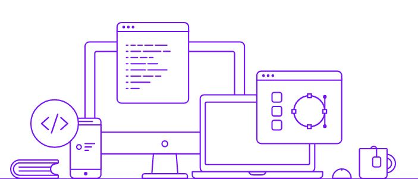

Sou um desenvolvedor em constante aprendizado, dedicado, autodidata e apaixonado por programação desde 2009, quando fiz minha primeira linha de código. Professor desde 2013, certificado pela Microsoft e apaixonado por tecnologia.
Me conheça melhor Desde quando comecei minha jornada na área da informática, tenho me aperfeiçoado em tecnologias que gosto. Comecei com informática básica, lecionei em escolas profissionalizantes como: Microlins, Eurodata, People, Fisk e Microcamp. Estudei informática avançada e obtive o MOS (Microsoft Office Specialist), e me tornei professor certificador na unidade Microlins Taboão. Como Designer, trabalhei com a criação de identidades visuais, propaganda, mídias sociais e impressos gráficos. Me formei em Análise e Desenvolvimento de Sistemas e uni o que sabia de design com o front-end para criar sites e front de sistemas. Hoje estudo com afinco para me tornar um programador FullStack.
Gosto de criar artes do zero, ver como algo é feito, aprender e fazer a minha versão daquela ideia.
Logos, Cartões de visita, catálogos, banners, panfletos, adesivos e criativos.
É a parte que eu mais gosto de atuar. Sou apaixonado pelos códigos e como comandos viram elementos visuais.
HTML5, CSS3, Javascript, SQL, PHP, Wordpress, Bootstrap, Git, GitHub.
É realmente maravilhosa a sensação de poder ensinar, ver alguém se desenvolver e conseguir ingressar no mercado de trabalho.
Microlins, Fisk, Microcamp, Eurodata e People.
Aqui estão alguns projetos em que trabalhei recentemente.
Vamos trabalhar juntos? Me chame para batermos um papo. Vou fazer o café...